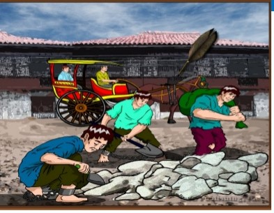

Kabanata 8 : Mga Ala-ala

Maganda ang araw noong panahong iyon.
Binabagtas ni Ibarra ang kahabaan ng Maynila sakay sa kalesa at ang tanawin sa paligid ay nakapagpabalik ng kanyang mga alaala.
Katulad pa rin ng dati ang kanyang namasdan.
Mga kalesa at karumatang walang humpay sa pagbyahe, salimbayan ng mga taong abala sa pangangalakal at kanya-kanyang mga gawain:
may mga Europeo, Intsik, Pilipino; may mga lalaking kargador, ang iba ay mga kababaihang nagtitinda ng prutas.
Ang mga tindahan at mga hayop na kasama sa paghahanapbuhay ay nandoon din.
Walang pinagbago ang puno ng talisay sa San Gabriel samantalang imbes na umunlad at gumaganda ay pumangit naman ang Escolta.
Nagmamadali namang ihatid ng mga karwahe ang mga kawani sa tanggapan at mga pari, kabilang na si Padre Damaso.
Siya’y nakita ni Kapitan Tinong kaya binati siya nito.
Sa kalye ng Arroceros ay napadako si Ibarra at naalalang minsan ay nahilo siya sa napakasamang amoy ng tabako doon.
Naikumpara din niya ang mga hardin sa Europa ng mapadaan siya sa Hardin ng Botaniko.
Ang buong Maynila para sa kanya ay walang pinag-unladat pinag-bago, bagkus ang mga gusali ay nilulumot lamang ng panahon.
Dahil dito, sumagi sa isipan ni Ibarra ang sinabi ng kanyang gurong pari.
Repleksiyon
Hindi sukat ang pagdaan ng panahon sa pag-unlad ng isang lugar dahil kung hindi tayo gagawa ng paraan para umunlad ang isang lugar.
Kahit ilang taon o dekada na ang nakalipas wala pa ring mangyayari. Ang kultura at tradisyon din ng isang lugar ay isang hindi mapapaltang kayamanan.
Ang mga alaala ng kahapon ang tunay na makakapagsabi ng pagbabago at pag-unlad at ito din ang magkakapagtanto sa atin ng mga nangyari sa mga nakalipas na panahon.
Masasabi din atin na ang kalayaan mula sa mga Kastila ang makakapagbigay ng pagkakataon at pag-asa upang makaahon muli ang bansa at mas mapa-unlad ito.